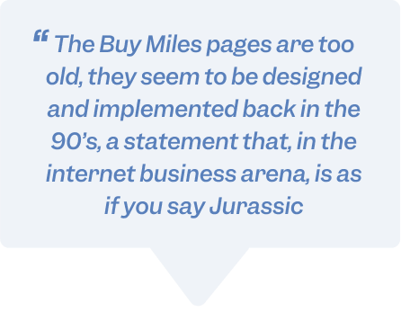
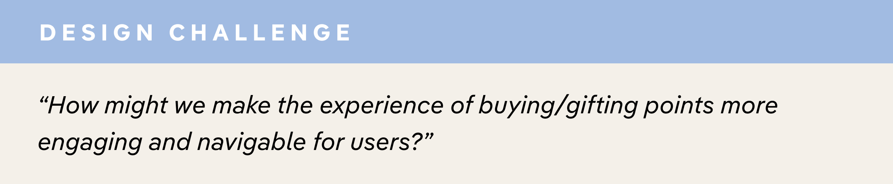

PHASE 1 : DISCOVERY
Previous solution

Pains and frustrations
To understand opportunities for improvement, customers were asked about areas of dissatisfaction within the product. Their feedback can be grouped into 3 areas:

Based on user insights and feedback on the existing storefront design gathered from marketing, I narrowed it down to 4 major opportunities for improvement.
